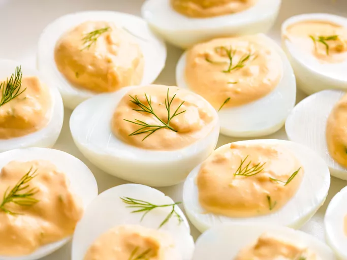

Classic Savory Deviled Eggs

Ingredients
- 6 hard-cooked eggs, halved
- 1/4cp mayonnaise
- 1tsp rice wine vinegar
- 1tsp Dijon mustard
- 1/2tsp garlic powder
- 1/8tsp salt
- Optional: 12 sprigs fresh dill
- Optional: 1/2tsp chopped fresh dill
Steps
- Gather all ingredients
- Scoop egg yolks into a bowl and set egg whites aside
- Add mayonnaise, vinegar, mustard, 1/2tsp chopped dill, garlic powder, and salt to the egg yolks
- Mash above mixture until smooth
- Spoon or pipe yolk mixture into egg whites
- Garnish with dill sprigs
- Refrigerate until ready to serve